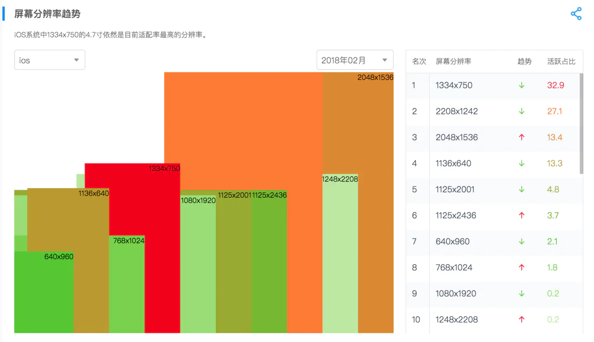
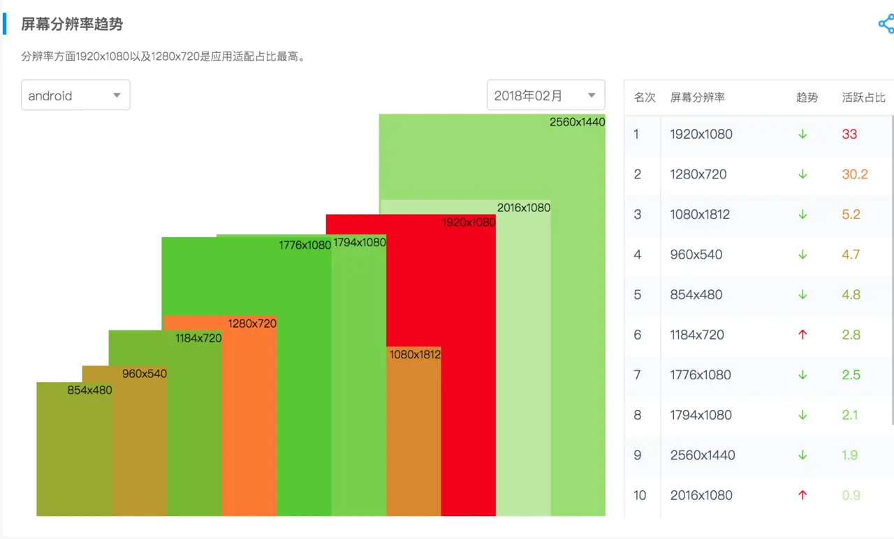
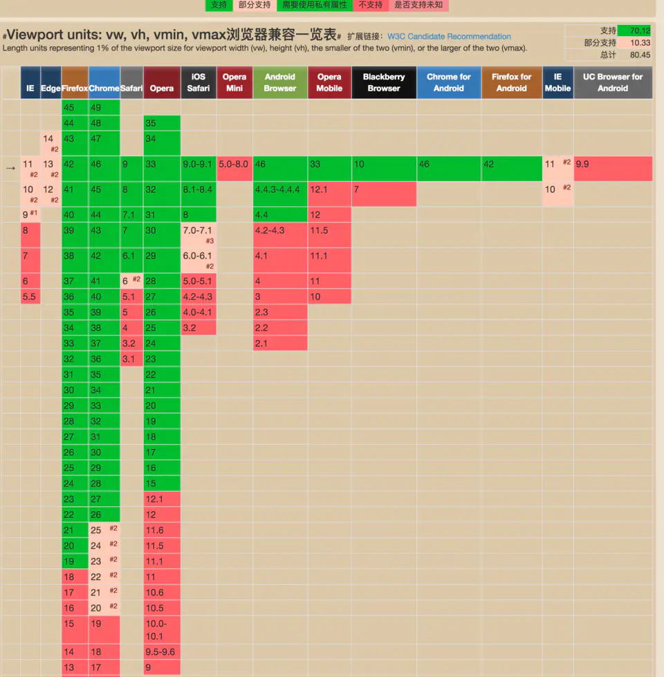
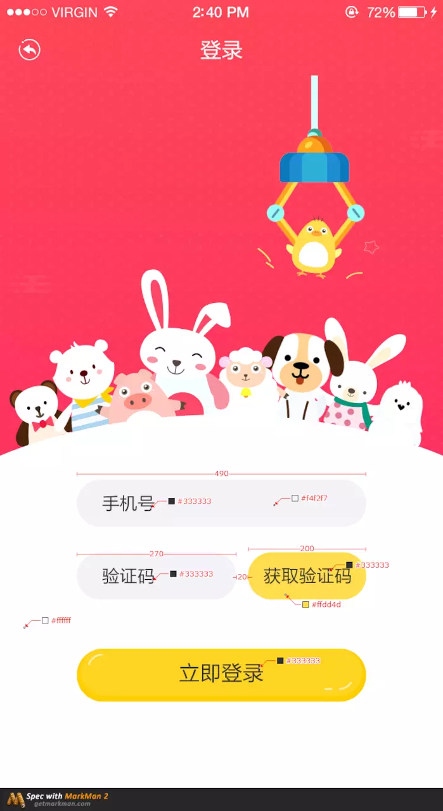

<!doctype html>
<html lang="zh" class="no-js">
  <head>
    
      <meta charset="utf-8">
      <meta name="viewport" content="width=device-width,initial-scale=1">
      
        <meta name="description" content="web前端开发wiki">
      
      
        <link rel="canonical" href="https://www.yuguoxy.com/web/%E6%9C%80%E6%96%B0%E7%A7%BB%E5%8A%A8%E7%AB%AF%E9%80%82%E9%85%8D%E6%96%B9%E6%A1%88/">
      
      
        <meta name="author" content="zhousir">
      
      <link rel="shortcut icon" href="../../assets/images/favicon.png">
      <meta name="generator" content="mkdocs-1.1, mkdocs-material-5.1.1">
    
    
      
        <title>4. 最新移动端适配方案 - web前端开发</title>
      
    
    
      <link rel="stylesheet" href="../../assets/stylesheets/main.a676eddb.min.css">
      
        <link rel="stylesheet" href="../../assets/stylesheets/palette.b302131d.min.css">
      
      
        
        
        <meta name="theme-color" content="#546e7a">
      
    
    
    
      
        <link href="https://fonts.gstatic.com" rel="preconnect" crossorigin>
        <link rel="stylesheet" href="https://fonts.googleapis.com/css?family=Ubuntu:300,400,400i,700%7CUbuntu+Mono&display=fallback">
        <style>body,input{font-family:"Ubuntu",-apple-system,BlinkMacSystemFont,Helvetica,Arial,sans-serif}code,kbd,pre{font-family:"Ubuntu Mono",SFMono-Regular,Consolas,Menlo,monospace}</style>
      
    
    
    
      <link rel="stylesheet" href="../../assets/css/simplelightbox.min.css">
    
      <link rel="stylesheet" href="../../assets/css/custom.css">
    
    
      
    
    
  </head>
  
  
    
    
    <body dir="" data-md-color-primary="blue-grey" data-md-color-accent="pink">
  
    <input class="md-toggle" data-md-toggle="drawer" type="checkbox" id="__drawer" autocomplete="off">
    <input class="md-toggle" data-md-toggle="search" type="checkbox" id="__search" autocomplete="off">
    <label class="md-overlay" for="__drawer"></label>
    <div data-md-component="skip">
      
        
        <a href="#_1" class="md-skip">
          跳转至
        </a>
      
    </div>
    <div data-md-component="announce">
      
    </div>
    
      <header class="md-header" data-md-component="header">
  <nav class="md-header-nav md-grid" aria-label="">
    <a href="https://www.yuguoxy.com/" title="web前端开发" class="md-header-nav__button md-logo" aria-label="web前端开发">
      
  
  <svg xmlns="http://www.w3.org/2000/svg" viewBox="0 0 24 24"><path d="M12,8A3,3 0 0,0 15,5A3,3 0 0,0 12,2A3,3 0 0,0 9,5A3,3 0 0,0 12,8M12,11.54C9.64,9.35 6.5,8 3,8V19C6.5,19 9.64,20.35 12,22.54C14.36,20.35 17.5,19 21,19V8C17.5,8 14.36,9.35 12,11.54Z" /></svg>

    </a>
    <label class="md-header-nav__button md-icon" for="__drawer">
      <svg xmlns="http://www.w3.org/2000/svg" viewBox="0 0 24 24"><path d="M3,6H21V8H3V6M3,11H21V13H3V11M3,16H21V18H3V16Z" /></svg>
    </label>
    <div class="md-header-nav__title" data-md-component="header-title">
      
        <div class="md-header-nav__ellipsis">
          <span class="md-header-nav__topic md-ellipsis">
            web前端开发
          </span>
          <span class="md-header-nav__topic md-ellipsis">
            
              4. 最新移动端适配方案
            
          </span>
        </div>
      
    </div>
    
      <label class="md-header-nav__button md-icon" for="__search">
        <svg xmlns="http://www.w3.org/2000/svg" viewBox="0 0 24 24"><path d="M9.5,3A6.5,6.5 0 0,1 16,9.5C16,11.11 15.41,12.59 14.44,13.73L14.71,14H15.5L20.5,19L19,20.5L14,15.5V14.71L13.73,14.44C12.59,15.41 11.11,16 9.5,16A6.5,6.5 0 0,1 3,9.5A6.5,6.5 0 0,1 9.5,3M9.5,5C7,5 5,7 5,9.5C5,12 7,14 9.5,14C12,14 14,12 14,9.5C14,7 12,5 9.5,5Z" /></svg>
      </label>
      
<div class="md-search" data-md-component="search" role="dialog">
  <label class="md-search__overlay" for="__search"></label>
  <div class="md-search__inner" role="search">
    <form class="md-search__form" name="search">
      <input type="text" class="md-search__input" name="query" aria-label="搜索" placeholder="搜索" autocapitalize="off" autocorrect="off" autocomplete="off" spellcheck="false" data-md-component="search-query" data-md-state="active">
      <label class="md-search__icon md-icon" for="__search">
        <svg xmlns="http://www.w3.org/2000/svg" viewBox="0 0 24 24"><path d="M9.5,3A6.5,6.5 0 0,1 16,9.5C16,11.11 15.41,12.59 14.44,13.73L14.71,14H15.5L20.5,19L19,20.5L14,15.5V14.71L13.73,14.44C12.59,15.41 11.11,16 9.5,16A6.5,6.5 0 0,1 3,9.5A6.5,6.5 0 0,1 9.5,3M9.5,5C7,5 5,7 5,9.5C5,12 7,14 9.5,14C12,14 14,12 14,9.5C14,7 12,5 9.5,5Z" /></svg>
        <svg xmlns="http://www.w3.org/2000/svg" viewBox="0 0 24 24"><path d="M20,11V13H8L13.5,18.5L12.08,19.92L4.16,12L12.08,4.08L13.5,5.5L8,11H20Z" /></svg>
      </label>
      <button type="reset" class="md-search__icon md-icon" aria-label="" data-md-component="search-reset" tabindex="-1">
        <svg xmlns="http://www.w3.org/2000/svg" viewBox="0 0 24 24"><path d="M19,6.41L17.59,5L12,10.59L6.41,5L5,6.41L10.59,12L5,17.59L6.41,19L12,13.41L17.59,19L19,17.59L13.41,12L19,6.41Z" /></svg>
      </button>
    </form>
    <div class="md-search__output">
      <div class="md-search__scrollwrap" data-md-scrollfix>
        <div class="md-search-result" data-md-component="search-result">
          <div class="md-search-result__meta">
            键入以开始搜索
          </div>
          <ol class="md-search-result__list"></ol>
        </div>
      </div>
    </div>
  </div>
</div>
    
    
  </nav>
</header>
    
    <div class="md-container" data-md-component="container">
      
        
      
      
        
          

  

<nav class="md-tabs md-tabs--active" aria-label="" data-md-component="tabs">
  <div class="md-tabs__inner md-grid">
    <ul class="md-tabs__list">
      
        
  
  
    <li class="md-tabs__item">
      
        <a href="../.." class="md-tabs__link">
          介绍
        </a>
      
    </li>
  

      
        
  
  
    <li class="md-tabs__item">
      
        <a href="../../tools/markdown%E4%BD%BF%E7%94%A8%E6%95%99%E7%A8%8B/" class="md-tabs__link">
          markdown&git
        </a>
      
    </li>
  

      
        
  
  
    <li class="md-tabs__item">
      
        <a href="../../vue/vue%E7%AE%80%E4%BB%8B/" class="md-tabs__link">
          vue框架
        </a>
      
    </li>
  

      
        
  
  
    <li class="md-tabs__item">
      
        <a href="../Web%E5%AE%89%E5%85%A8/" class="md-tabs__link">
          web技术
        </a>
      
    </li>
  

      
        
  
  
    <li class="md-tabs__item">
      
        <a href="../%E9%A1%B5%E9%9D%A2%E5%8D%95%E4%BD%8D%E5%B0%8F%E7%BB%93/" class="md-tabs__link md-tabs__link--active">
          屏幕适配方案
        </a>
      
    </li>
  

      
        
  
  
    <li class="md-tabs__item">
      
        <a href="../../api/usermanger_api/" class="md-tabs__link">
          api接口文档
        </a>
      
    </li>
  

      
    </ul>
  </div>
</nav>
        
      
      <main class="md-main" data-md-component="main">
        <div class="md-main__inner md-grid">
          
            
              <div class="md-sidebar md-sidebar--primary" data-md-component="navigation">
                <div class="md-sidebar__scrollwrap">
                  <div class="md-sidebar__inner">
                    <nav class="md-nav md-nav--primary" aria-label="" data-md-level="0">
  <label class="md-nav__title" for="__drawer">
    <a href="https://www.yuguoxy.com/" title="web前端开发" class="md-nav__button md-logo" aria-label="web前端开发">
      
  
  <svg xmlns="http://www.w3.org/2000/svg" viewBox="0 0 24 24"><path d="M12,8A3,3 0 0,0 15,5A3,3 0 0,0 12,2A3,3 0 0,0 9,5A3,3 0 0,0 12,8M12,11.54C9.64,9.35 6.5,8 3,8V19C6.5,19 9.64,20.35 12,22.54C14.36,20.35 17.5,19 21,19V8C17.5,8 14.36,9.35 12,11.54Z" /></svg>

    </a>
    web前端开发
  </label>
  
  <ul class="md-nav__list" data-md-scrollfix>
    
      
      
      


  <li class="md-nav__item md-nav__item--nested">
    
      <input class="md-nav__toggle md-toggle" data-md-toggle="nav-1" type="checkbox" id="nav-1">
    
    <label class="md-nav__link" for="nav-1">
      介绍
      <span class="md-nav__icon md-icon">
        <svg xmlns="http://www.w3.org/2000/svg" viewBox="0 0 24 24"><path d="M8.59,16.58L13.17,12L8.59,7.41L10,6L16,12L10,18L8.59,16.58Z" /></svg>
      </span>
    </label>
    <nav class="md-nav" aria-label="介绍" data-md-level="1">
      <label class="md-nav__title" for="nav-1">
        <span class="md-nav__icon md-icon">
          <svg xmlns="http://www.w3.org/2000/svg" viewBox="0 0 24 24"><path d="M20,11V13H8L13.5,18.5L12.08,19.92L4.16,12L12.08,4.08L13.5,5.5L8,11H20Z" /></svg>
        </span>
        介绍
      </label>
      <ul class="md-nav__list" data-md-scrollfix>
        
        
          
          
          


  <li class="md-nav__item">
    <a href="../.." title="1. 平台介绍" class="md-nav__link">
      1. 平台介绍
    </a>
  </li>

        
          
          
          


  <li class="md-nav__item">
    <a href="../../html/00web%E5%89%8D%E7%AB%AF%E4%BB%8B%E7%BB%8D/" title="2. web前端介绍" class="md-nav__link">
      2. web前端介绍
    </a>
  </li>

        
          
          
          


  <li class="md-nav__item">
    <a href="../../html/01html%E5%9F%BA%E7%A1%80/" title="3. html基础" class="md-nav__link">
      3. html基础
    </a>
  </li>

        
      </ul>
    </nav>
  </li>

    
      
      
      


  <li class="md-nav__item md-nav__item--nested">
    
      <input class="md-nav__toggle md-toggle" data-md-toggle="nav-2" type="checkbox" id="nav-2">
    
    <label class="md-nav__link" for="nav-2">
      markdown&git
      <span class="md-nav__icon md-icon">
        <svg xmlns="http://www.w3.org/2000/svg" viewBox="0 0 24 24"><path d="M8.59,16.58L13.17,12L8.59,7.41L10,6L16,12L10,18L8.59,16.58Z" /></svg>
      </span>
    </label>
    <nav class="md-nav" aria-label="markdown&git" data-md-level="1">
      <label class="md-nav__title" for="nav-2">
        <span class="md-nav__icon md-icon">
          <svg xmlns="http://www.w3.org/2000/svg" viewBox="0 0 24 24"><path d="M20,11V13H8L13.5,18.5L12.08,19.92L4.16,12L12.08,4.08L13.5,5.5L8,11H20Z" /></svg>
        </span>
        markdown&git
      </label>
      <ul class="md-nav__list" data-md-scrollfix>
        
        
          
          
          


  <li class="md-nav__item">
    <a href="../../tools/markdown%E4%BD%BF%E7%94%A8%E6%95%99%E7%A8%8B/" title="1. markdown使用教程" class="md-nav__link">
      1. markdown使用教程
    </a>
  </li>

        
          
          
          


  <li class="md-nav__item">
    <a href="../../tools/git%E4%BD%BF%E7%94%A8%E6%95%99%E7%A8%8B/" title="2. git使用教程" class="md-nav__link">
      2. git使用教程
    </a>
  </li>

        
      </ul>
    </nav>
  </li>

    
      
      
      


  <li class="md-nav__item md-nav__item--nested">
    
      <input class="md-nav__toggle md-toggle" data-md-toggle="nav-3" type="checkbox" id="nav-3">
    
    <label class="md-nav__link" for="nav-3">
      vue框架
      <span class="md-nav__icon md-icon">
        <svg xmlns="http://www.w3.org/2000/svg" viewBox="0 0 24 24"><path d="M8.59,16.58L13.17,12L8.59,7.41L10,6L16,12L10,18L8.59,16.58Z" /></svg>
      </span>
    </label>
    <nav class="md-nav" aria-label="vue框架" data-md-level="1">
      <label class="md-nav__title" for="nav-3">
        <span class="md-nav__icon md-icon">
          <svg xmlns="http://www.w3.org/2000/svg" viewBox="0 0 24 24"><path d="M20,11V13H8L13.5,18.5L12.08,19.92L4.16,12L12.08,4.08L13.5,5.5L8,11H20Z" /></svg>
        </span>
        vue框架
      </label>
      <ul class="md-nav__list" data-md-scrollfix>
        
        
          
          
          


  <li class="md-nav__item">
    <a href="../../vue/vue%E7%AE%80%E4%BB%8B/" title="1. vue简介" class="md-nav__link">
      1. vue简介
    </a>
  </li>

        
          
          
          


  <li class="md-nav__item">
    <a href="../../vue/vue%E5%AE%89%E8%A3%85/" title="2. vue安装" class="md-nav__link">
      2. vue安装
    </a>
  </li>

        
      </ul>
    </nav>
  </li>

    
      
      
      


  <li class="md-nav__item md-nav__item--nested">
    
      <input class="md-nav__toggle md-toggle" data-md-toggle="nav-4" type="checkbox" id="nav-4">
    
    <label class="md-nav__link" for="nav-4">
      web技术
      <span class="md-nav__icon md-icon">
        <svg xmlns="http://www.w3.org/2000/svg" viewBox="0 0 24 24"><path d="M8.59,16.58L13.17,12L8.59,7.41L10,6L16,12L10,18L8.59,16.58Z" /></svg>
      </span>
    </label>
    <nav class="md-nav" aria-label="web技术" data-md-level="1">
      <label class="md-nav__title" for="nav-4">
        <span class="md-nav__icon md-icon">
          <svg xmlns="http://www.w3.org/2000/svg" viewBox="0 0 24 24"><path d="M20,11V13H8L13.5,18.5L12.08,19.92L4.16,12L12.08,4.08L13.5,5.5L8,11H20Z" /></svg>
        </span>
        web技术
      </label>
      <ul class="md-nav__list" data-md-scrollfix>
        
        
          
          
          


  <li class="md-nav__item">
    <a href="../Web%E5%AE%89%E5%85%A8/" title="1. web安全" class="md-nav__link">
      1. web安全
    </a>
  </li>

        
          
          
          


  <li class="md-nav__item">
    <a href="../%E6%97%A0%E9%99%90%E4%B8%8B%E6%8B%89%E6%96%B9%E6%A1%88/" title="2. 无限下拉方案" class="md-nav__link">
      2. 无限下拉方案
    </a>
  </li>

        
          
          
          


  <li class="md-nav__item">
    <a href="../css%E5%8F%98%E9%87%8F%E6%95%99%E7%A8%8B/" title="3. css变量" class="md-nav__link">
      3. css变量
    </a>
  </li>

        
      </ul>
    </nav>
  </li>

    
      
      
      

  


  <li class="md-nav__item md-nav__item--active md-nav__item--nested">
    
      <input class="md-nav__toggle md-toggle" data-md-toggle="nav-5" type="checkbox" id="nav-5" checked>
    
    <label class="md-nav__link" for="nav-5">
      屏幕适配方案
      <span class="md-nav__icon md-icon">
        <svg xmlns="http://www.w3.org/2000/svg" viewBox="0 0 24 24"><path d="M8.59,16.58L13.17,12L8.59,7.41L10,6L16,12L10,18L8.59,16.58Z" /></svg>
      </span>
    </label>
    <nav class="md-nav" aria-label="屏幕适配方案" data-md-level="1">
      <label class="md-nav__title" for="nav-5">
        <span class="md-nav__icon md-icon">
          <svg xmlns="http://www.w3.org/2000/svg" viewBox="0 0 24 24"><path d="M20,11V13H8L13.5,18.5L12.08,19.92L4.16,12L12.08,4.08L13.5,5.5L8,11H20Z" /></svg>
        </span>
        屏幕适配方案
      </label>
      <ul class="md-nav__list" data-md-scrollfix>
        
        
          
          
          


  <li class="md-nav__item">
    <a href="../%E9%A1%B5%E9%9D%A2%E5%8D%95%E4%BD%8D%E5%B0%8F%E7%BB%93/" title="1. pt单位" class="md-nav__link">
      1. pt单位
    </a>
  </li>

        
          
          
          


  <li class="md-nav__item">
    <a href="../rem%E5%8D%95%E4%BD%8D%E8%87%AA%E9%80%82%E5%BA%94%E5%B1%8F%E5%B9%95/" title="2. rem单位详解" class="md-nav__link">
      2. rem单位详解
    </a>
  </li>

        
          
          
          


  <li class="md-nav__item">
    <a href="../%E4%BD%BF%E7%94%A8Flexible%E5%AE%9E%E7%8E%B0%E6%89%8B%E6%B7%98H5%E9%A1%B5%E9%9D%A2%E7%9A%84%E7%BB%88%E7%AB%AF%E9%80%82%E9%85%8D/" title="3. 手淘H5页面的终端适配" class="md-nav__link">
      3. 手淘H5页面的终端适配
    </a>
  </li>

        
          
          
          

  


  <li class="md-nav__item md-nav__item--active">
    
    <input class="md-nav__toggle md-toggle" data-md-toggle="toc" type="checkbox" id="__toc">
    
      
    
    
    <a href="./" title="4. 最新移动端适配方案" class="md-nav__link md-nav__link--active">
      4. 最新移动端适配方案
    </a>
    
  </li>

        
          
          
          


  <li class="md-nav__item">
    <a href="../px%E8%BD%ACvw%E5%92%8Cvh%E7%9A%84%E5%B7%A5%E5%85%B7/" title="5. px转vw和vh的工具" class="md-nav__link">
      5. px转vw和vh的工具
    </a>
  </li>

        
          
          
          


  <li class="md-nav__item">
    <a href="../%E4%BD%A0%E4%BA%86%E8%A7%A3%E8%BF%87%E7%A7%BB%E5%8A%A8%E7%AB%AF%E9%80%82%E9%85%8D%E5%90%97/" title="6. 你了解过移动端适配吗" class="md-nav__link">
      6. 你了解过移动端适配吗
    </a>
  </li>

        
      </ul>
    </nav>
  </li>

    
      
      
      


  <li class="md-nav__item md-nav__item--nested">
    
      <input class="md-nav__toggle md-toggle" data-md-toggle="nav-6" type="checkbox" id="nav-6">
    
    <label class="md-nav__link" for="nav-6">
      api接口文档
      <span class="md-nav__icon md-icon">
        <svg xmlns="http://www.w3.org/2000/svg" viewBox="0 0 24 24"><path d="M8.59,16.58L13.17,12L8.59,7.41L10,6L16,12L10,18L8.59,16.58Z" /></svg>
      </span>
    </label>
    <nav class="md-nav" aria-label="api接口文档" data-md-level="1">
      <label class="md-nav__title" for="nav-6">
        <span class="md-nav__icon md-icon">
          <svg xmlns="http://www.w3.org/2000/svg" viewBox="0 0 24 24"><path d="M20,11V13H8L13.5,18.5L12.08,19.92L4.16,12L12.08,4.08L13.5,5.5L8,11H20Z" /></svg>
        </span>
        api接口文档
      </label>
      <ul class="md-nav__list" data-md-scrollfix>
        
        
          
          
          


  <li class="md-nav__item">
    <a href="../../api/usermanger_api/" title="1. 后台中心api文档" class="md-nav__link">
      1. 后台中心api文档
    </a>
  </li>

        
      </ul>
    </nav>
  </li>

    
  </ul>
</nav>
                  </div>
                </div>
              </div>
            
            
              <div class="md-sidebar md-sidebar--secondary" data-md-component="toc">
                <div class="md-sidebar__scrollwrap">
                  <div class="md-sidebar__inner">
                    
<nav class="md-nav md-nav--secondary" aria-label="目录">
  
  
    
  
  
</nav>
                  </div>
                </div>
              </div>
            
          
          <div class="md-content">
            <article class="md-content__inner md-typeset">
              
                
                
                  
                
                
                <h1 id="_1">移动端适配问题解决方案<a class="headerlink" href="#_1" title="Permanent link">&para;</a></h1>
<h1 id="_2">前言<a class="headerlink" href="#_2" title="Permanent link">&para;</a></h1>
<p>随着时间的发展，现在基本上人手一部手机的低头族。做为前端开发的程序猿，在开发移动端web应用的时候，对面一堆各色尺寸不一样的屏幕，就有点淡淡的忧伤。</p>
<p></p>
<p></p>
<p>已上是2018年二月份最新的友盟数据，可在<a href="http://compass.umeng.com/?spm=a211g2.181323.0.0.5c633604ZUwuxp&amp;&amp;utm_source=zzbanner#/equipment?_k=xf1l4k">这里</a>查看详情</p>
<p>很明显我们所要实现的就是在上述如此之多的屏幕,都能实现UI大大出的视觉图上的效果。而要实现这样的效果主要有两个难点</p>
<ol>
<li>各屏幕适配</li>
<li>Retina屏下的细节处理（主要是1px的问题）</li>
</ol>
<h1 id="_3">各屏幕适配<a class="headerlink" href="#_3" title="Permanent link">&para;</a></h1>
<p>各屏幕的适配，有两种方案，<code>flexible + rem</code> 与 <code>vw</code>。这三个单词是什么意思，看着很眼熟，但是这两个方案居然是什么呢,请允许我细细道来。</p>
<h2 id="flexible-rem">flexible + rem<a class="headerlink" href="#flexible-rem" title="Permanent link">&para;</a></h2>
<p>显而易见,该方案是由rem 以及 flexible组成的。rem （font size of the root element）相对于根元素(即html元素)font-size计算值的倍数,flexible 即 flexible.js, 手淘团队提供的一个为该方案屏幕适配而写的一个库,主要实现的功能就是，根据屏幕的宽度给 html 元素设置一个合适的 font-size 值。</p>
<p>怎么样看的不是很懂是吧。让我来用一个页面场景再复述一遍。</p>
<p>正常情况下，我们的UI大大会以iphone6的尺寸为标准，做一套视觉效果图，并在上面进行标注，给到我们的标注图，如下所示</p>
<p></p>
<p>拿到这个图 我们该如何下手呢</p>
<ol>
<li>先设置 html 元素的 font-size, 这个值我们暂时设置为 font-size: 37.5px，即1rem = 37.5px;</li>
<li>以iphone6为例子，其屏幕宽度为 750px, 整个屏幕的宽度即 20rem = 37.5 * 20px = 750px;</li>
<li>此时手机号的输入框为 490px = 13.06777777rem</li>
<li>依次将页面上的px转换为rem，这样我们就得到了全是rem为尺寸单位的页面</li>
</ol>
<p>到这里为止是不是就结束了呢 ? 很遗憾的告诉你并不是。为什么 html 元素的 font-size 要设置为 37.5px呢？现在这个界面在iphone6上能完美显示了，在iphone5s,iphone6p能完美显示吗？（iphone6, iphone6s, iphone7. iphone8屏幕没有发生变化，本文直接用iphone6代替了。） 上面的两个问题 我们还有没解决，这个时候就轮到flexible登场了。只需要像如下引入就可实现用js来自动根据屏幕宽度设置 html元素的font-size的值。</p>
<div class="highlight"><pre><span></span><code><span class="o">&lt;</span><span class="nx">script</span> <span class="nx">src</span><span class="o">=</span><span class="s2">&quot;http://g.tbcdn.cn/mtb/lib-flexible/0.3.4/??flexible_css.js,flexible.js&quot;</span><span class="o">&gt;&lt;</span><span class="err">/script&gt;</span>
</code></pre></div>

<h3 id="_4">引申一下<a class="headerlink" href="#_4" title="Permanent link">&para;</a></h3>
<p>在上述过程中，你会发现，UI给到我们的一般是px标注的图，我们将其转化为rem，这个过程其实会花费很大的计算时间。做为一个合格的程序员，我们应该把这种机械性无脑的操作交给计算机来实现。我使用的是PostCss的插件 <a href="https://www.npmjs.com/package/postcss-px2rem">postcss-px2rem</a>,这个插件能让我们在写代码时候直接写px，在构建的时候自动将我们所写的px转换为rem，大大提升了我们的开发效率。</p>
<h2 id="vw">vw<a class="headerlink" href="#vw" title="Permanent link">&para;</a></h2>
<p>这个vw的方案，相当而言还比较新。vw 即（viewport width）可视窗口的宽度。之所以把这个方案放在后面来说，是因为viewport在去年（2017年）的时候存在不少的兼容性问题，各个浏览器的支持并不是很好。但是来到了2018年这个时间点，viewport单位意见得到了众多浏览器的支持（80.45%）。</p>
<p></p>
<p>可以在<a href="http://caniuse.mojijs.com/Home/Html/item/key/viewport-units/index.html">这里</a>查看。</p>
<p>接下来就让我们来正式了解下这个方案吧。 vw既然是一个尺寸单位，那它的宽度等于多少呢？等于1%整个屏幕的宽度。举个例子，再次以iphone6手机为例，100vw = 750px =&gt; 1vw = 7.5px</p>
<p>再一次那上次的界面做示范</p>
<p></p>
<ol>
<li>根据定义，我们了解了在iphone6手机上 1vw = 7.5px</li>
<li>此时手机号的输入框为 490px = 65.333333vw</li>
<li>依次将页面上的px转换为vw，这样我们就得到了全是vw为尺寸单位的页面</li>
</ol>
<p>到这里为止是不是就结束了呢? 是的就是这么简单。</p>
<h3 id="_5">引申一下<a class="headerlink" href="#_5" title="Permanent link">&para;</a></h3>
<p>跟之前一样的痛点，我们仍然需要花费大量不必要的计算时间去把标注图中的px转换为vw，有没有类似于postcss-px2rem的工具呢？很荣幸能再次站在巨人的肩膀上，已经有大神写了了类似的PostCss插件 <a href="https://github.com/evrone/postcss-px-to-viewport">postcss-px-to-viewport</a></p>
<h1 id="1px">1px问题<a class="headerlink" href="#1px" title="Permanent link">&para;</a></h1>
<p>移动端的屏幕不仅仅分辨率有差异，其实还有Retina屏的问题。正常情况下，我们代码里的1px在屏幕上就应该显示一个像素点，但是在Retina屏下则不仅仅是一个像素点。再次拿iphone6为例，其dpr(device pixel ratio)设备像素比为2，css中一个1x1的点，其实在iphone6上是2x2的点,并且1px的边框在devicePixelRatio = 2的Retina屏下会显示成2px，在iPhone6 Plus下甚至会显示成3px。</p>
<p>这样的话，我们就会发现在有些手机上1px明显跟另外的一些手机的1px粗细不一样。 其实大多数的小公司不会扣这样的一个细节，比如说我们公司不会。(<em><sup>__</sup></em>) 嘻嘻……</p>
<p>但是作为一个有追求的前端工程师，我们应该尽量的把事情做的完美一点，（ps.像大公司看齐，在大公司这个细节问题其实是不容忽视的，为了自己以后的发展前途，我们有必要把这个细节完善掉的。）</p>
<p>这个问题的解决方案有很多，个人觉得最简单方面的还是大漠大大的一种解决方案。使用<a href="https://github.com/jonathantneal/postcss-write-svg">postcss-write-svg</a>插件,</p>
<div class="highlight"><pre><span></span><code><span class="p">@</span><span class="k">svg</span> <span class="nt">1px-border</span> <span class="p">{</span>
  <span class="nt">height</span><span class="o">:</span> <span class="nt">2px</span><span class="o">;</span>
  <span class="p">@</span><span class="k">rect</span> <span class="p">{</span>
    <span class="nt">fill</span><span class="o">:</span> <span class="nt">var</span><span class="o">(</span><span class="nt">--color</span><span class="o">,</span> <span class="nt">black</span><span class="o">);</span>
    <span class="nt">width</span><span class="o">:</span> <span class="nt">100</span><span class="o">%;</span> <span class="nt">height</span><span class="o">:</span> <span class="nt">50</span><span class="o">%;</span>
    <span class="p">}</span>
  <span class="p">}</span>
<span class="p">.</span><span class="nc">example</span> <span class="p">{</span>
  <span class="k">border</span><span class="p">:</span> <span class="mi">1</span><span class="kt">px</span> <span class="kc">solid</span> <span class="kc">transparent</span><span class="p">;</span>
  <span class="k">border-image</span><span class="p">:</span> <span class="nf">svg</span><span class="p">(</span><span class="mi">1</span><span class="kt">px</span><span class="o">-</span><span class="n">border</span> <span class="nf">param</span><span class="p">(</span><span class="o">--</span><span class="kc">color</span> <span class="mh">#00b1ff</span><span class="p">))</span> <span class="mi">2</span> <span class="mi">2</span> <span class="kc">stretch</span><span class="p">;</span>
<span class="p">}</span>
</code></pre></div>

<p>编译出来就是</p>
<div class="highlight"><pre><span></span><code><span class="p">.</span><span class="nc">example</span> <span class="p">{</span>
  <span class="k">border</span><span class="p">:</span> <span class="mi">1</span><span class="kt">px</span> <span class="kc">solid</span> <span class="kc">transparent</span><span class="p">;</span>
  <span class="k">border-image</span><span class="p">:</span> <span class="nb">url</span><span class="p">(</span><span class="s2">&quot;data:image/svg+xml;charset=utf-8,%3Csvg xmlns=&#39;http://www.w3.org/2000/svg&#39; height=&#39;2px&#39;%3E%3Crect fill=&#39;%2300b1ff&#39; width=&#39;100%25&#39; height=&#39;50%25&#39;/%3E%3C/svg%3E&quot;</span><span class="p">)</span> <span class="mi">2</span> <span class="mi">2</span> <span class="kc">stretch</span><span class="p">;</span>
<span class="p">}</span>
</code></pre></div>

<h1 id="_6">其他<a class="headerlink" href="#_6" title="Permanent link">&para;</a></h1>
<h2 id="_7">小程序中的屏幕适配<a class="headerlink" href="#_7" title="Permanent link">&para;</a></h2>
<p>最近在写小程序，在小程序里，使用的是小程序的那套，跟平时用的vue全家桶以及react全家桶不一样，并没有配置webpack，在这种情况下我们使用postcss其实很困难（反正我是搞不出来/(ㄒoㄒ)/~~）</p>
<p>那该怎么办呢，小程序提供了一个自己的单位, rpx（responsive pixel）: 可以根据屏幕宽度进行自适应。规定屏幕宽为750rpx。如在 iPhone6 上，屏幕宽度为375px，共有750个物理像素，则750rpx = 375px = 750物理像素，1rpx = 0.5px = 1物理像素。</p>
<table>
<thead>
<tr>
<th>设备</th>
<th align="center">rpx换算px (屏幕宽度/750)</th>
<th align="right">px换算rpx (750/屏幕宽度)</th>
</tr>
</thead>
<tbody>
<tr>
<td>iPhone5</td>
<td align="center">1rpx = 0.42px</td>
<td align="right">1px = 2.34rpx</td>
</tr>
<tr>
<td>iPhone6</td>
<td align="center">1rpx = 0.5px</td>
<td align="right">1px = 2rpx</td>
</tr>
<tr>
<td>iPhone6p</td>
<td align="center">1rpx = 0.552px</td>
<td align="right">1px = 1.81rpx</td>
</tr>
</tbody>
</table>
<p>我们直接用拿到iphone6的标注图，直接写rpx就好。棒👍</p>
<h1 id="_8">总结<a class="headerlink" href="#_8" title="Permanent link">&para;</a></h1>
<p>如果仔细看一下的话，会发现之前的rem的方案其实就是模拟了vw的实现方案，两者有非常多的相似之处。在<a href="https://github.com/amfe/lib-flexible">lib-flexible</a>的github上有着这样的一句话。</p>
<blockquote>
<p>由于viewport单位得到众多浏览器的兼容，lib-flexible这个过渡方案已经可以放弃使用，不管是现在的版本还是以前的版本，都存有一定的问题。建议大家开始使用viewport来替代此方案。vw的兼容方案可以参阅《如何在Vue项目中使用vw实现移动端适配》一文。</p>
</blockquote>
<p>我们可以得到一个很明确的信息，lib-flexible这个方案已经被放弃使用了，我们可以去拥抱vw的那套实现方案。</p>
<p>本文参考了大漠大大在 www.w3cplus.com 里的多篇文章</p>
<ol>
<li><a href="https://www.w3cplus.com/mobile/lib-flexible-for-html5-layout.html">使用Flexible实现手淘H5页面的终端适配</a></li>
<li><a href="https://www.w3cplus.com/css/vw-for-layout.html">再聊移动端页面的适配</a></li>
<li><a href="https://www.w3cplus.com/css/towards-retina-web.html">走向视网膜（Retina）的Web时代</a></li>
<li><a href="https://www.w3cplus.com/css/fix-1px-for-retina.html">再谈Retina下1px的解决方案</a></li>
<li><a href="https://developers.weixin.qq.com/miniprogram/dev/framework/view/wxss.html">小程序-wxss</a></li>
</ol>
                
              
              
                


              
            </article>
          </div>
        </div>
      </main>
      
        
<footer class="md-footer">
  
    <div class="md-footer-nav">
      <nav class="md-footer-nav__inner md-grid" aria-label="">
        
          <a href="../%E4%BD%BF%E7%94%A8Flexible%E5%AE%9E%E7%8E%B0%E6%89%8B%E6%B7%98H5%E9%A1%B5%E9%9D%A2%E7%9A%84%E7%BB%88%E7%AB%AF%E9%80%82%E9%85%8D/" title="3. 手淘H5页面的终端适配" class="md-footer-nav__link md-footer-nav__link--prev" rel="prev">
            <div class="md-footer-nav__button md-icon">
              <svg xmlns="http://www.w3.org/2000/svg" viewBox="0 0 24 24"><path d="M20,11V13H8L13.5,18.5L12.08,19.92L4.16,12L12.08,4.08L13.5,5.5L8,11H20Z" /></svg>
            </div>
            <div class="md-footer-nav__title">
              <div class="md-ellipsis">
                <span class="md-footer-nav__direction">
                  上一页
                </span>
                3. 手淘H5页面的终端适配
              </div>
            </div>
          </a>
        
        
          <a href="../px%E8%BD%ACvw%E5%92%8Cvh%E7%9A%84%E5%B7%A5%E5%85%B7/" title="5. px转vw和vh的工具" class="md-footer-nav__link md-footer-nav__link--next" rel="next">
            <div class="md-footer-nav__title">
              <div class="md-ellipsis">
                <span class="md-footer-nav__direction">
                  下一页
                </span>
                5. px转vw和vh的工具
              </div>
            </div>
            <div class="md-footer-nav__button md-icon">
              <svg xmlns="http://www.w3.org/2000/svg" viewBox="0 0 24 24"><path d="M4,11V13H16L10.5,18.5L11.92,19.92L19.84,12L11.92,4.08L10.5,5.5L16,11H4Z" /></svg>
            </div>
          </a>
        
      </nav>
    </div>
  
  <div class="md-footer-meta md-typeset">
    <div class="md-footer-meta__inner md-grid">
      <div class="md-footer-copyright">
        
          <div class="md-footer-copyright__highlight">
            Copyright © 2020 雨果学院wiki
          </div>
        
        Made with
        <a href="https://squidfunk.github.io/mkdocs-material/" target="_blank" rel="noopener">
          Material for MkDocs
        </a>
      </div>
      
    </div>
  </div>
</footer>
      
    </div>
    
      <script src="../../assets/javascripts/vendor.c51dfa35.min.js"></script>
      <script src="../../assets/javascripts/bundle.eaaa3931.min.js"></script><script id="__lang" type="application/json">{"clipboard.copy": "\u590d\u5236", "clipboard.copied": "\u5df2\u590d\u5236", "search.config.lang": "ja", "search.config.pipeline": "", "search.config.separator": "[\\uff0c\\u3002]+", "search.result.placeholder": "\u952e\u5165\u4ee5\u5f00\u59cb\u641c\u7d22", "search.result.none": "\u6ca1\u6709\u627e\u5230\u7b26\u5408\u6761\u4ef6\u7684\u7ed3\u679c", "search.result.one": "\u627e\u5230 1 \u4e2a\u7b26\u5408\u6761\u4ef6\u7684\u7ed3\u679c", "search.result.other": "# \u4e2a\u7b26\u5408\u6761\u4ef6\u7684\u7ed3\u679c"}</script>
      
      <script>
        app = initialize({
          base: "../..",
          features: ["tabs"],
          search: Object.assign({
            worker: "../../assets/javascripts/worker/search.58d22e8e.min.js"
          }, typeof search !== "undefined" && search)
        })
      </script>
      
        <script src="../../assets/js/jquery-1.11.3.min.js"></script>
      
        <script src="../../assets/js/simple-lightbox.min.js"></script>
      
        <script src="../../assets/js/custom.js"></script>
      
    
  </body>
</html>